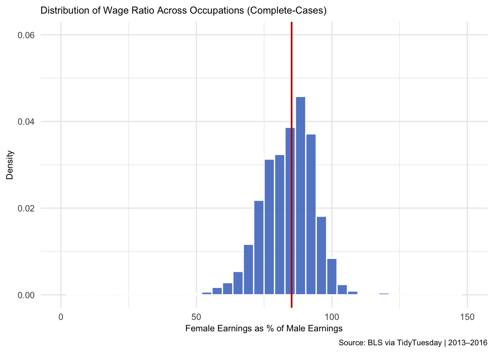
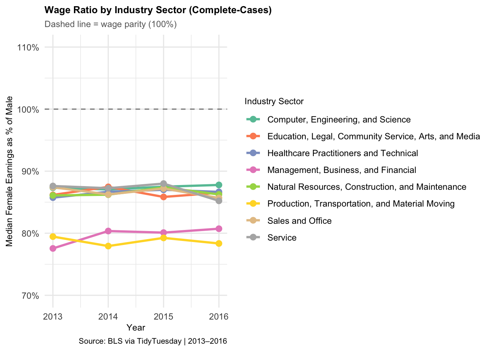
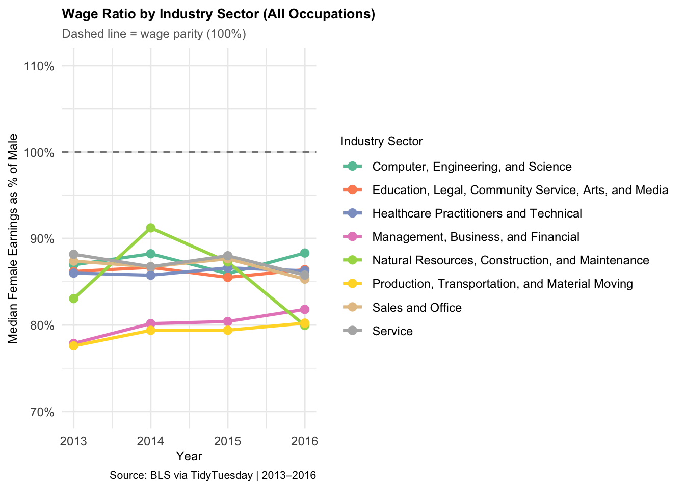
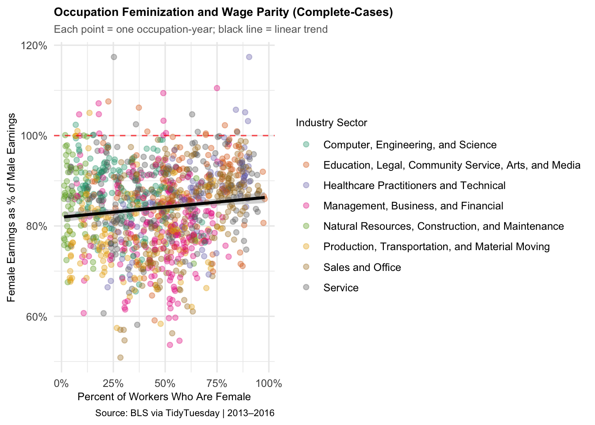
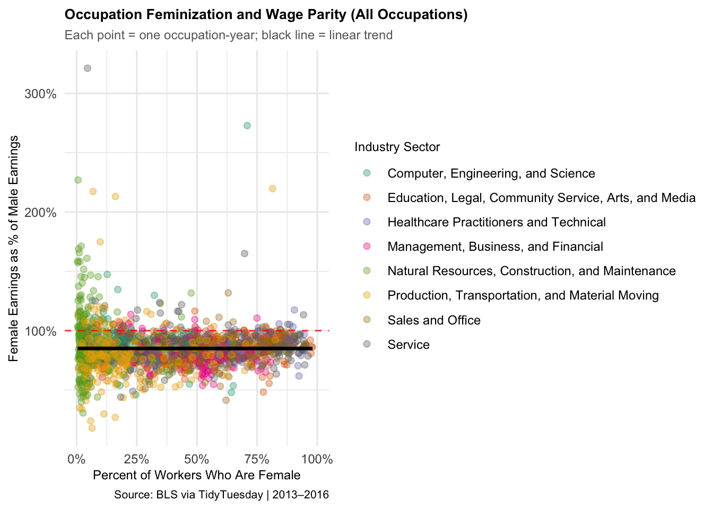
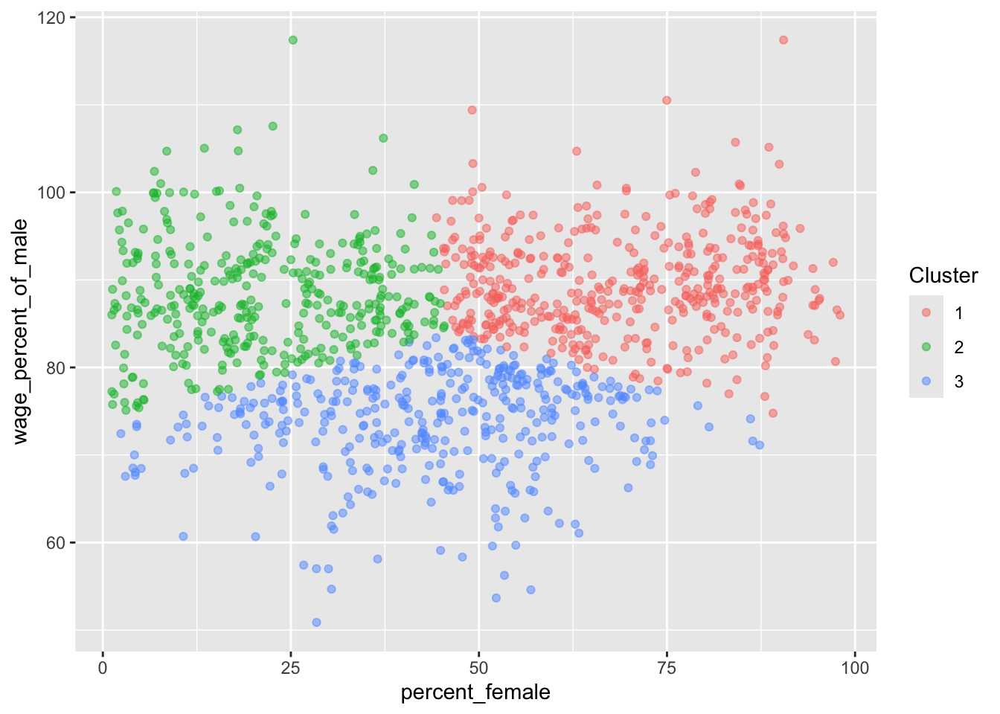
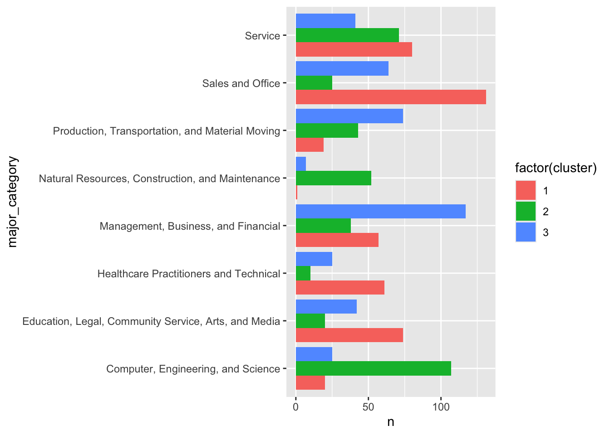

| Variable | N | Mean | SD | Min | Median | Max |
|---|---|---|---|---|---|---|
| wage_percent_of_male | 1242 | 84.0 | 9.4 | 50.9 | 85.2 | 117.4 |
| percent_female | 2088 | 36.0 | 27.5 | 0.0 | 32.4 | 100.0 |
| total_workers | 2088 | 196054.9 | 375361.0 | 658.0 | 58997.0 | 3758629.0 |
title: “MATH 244: Intermediate Data Science Project - Daniel and Anni”
Welcome! This is a template for creating a website using quarto and GitHub pages.

This project analyzes the Gender Wage Gap between 2013-2016.
Introduction
While the gender wage gap is well known, it doesn’t affect all occupations equally. This raises the question of what factors actually drive these wage differences. This project specifically asks whether occupation gender composition, workforce size, and industry category are associated with differences in the gender wage gap across occupations. Understanding it can help us explain the gender-wage gap rather than just acknowledging it exists.
Our focus is on occupation-level variation in the gender wage gap to understand what factors drive differences in earnings. We sourced our data from TidyTuesday, which obtained it from the Bureau of Labor Statistics. The data were collected from 2013 to 2016 and include about 2,000 observations on earnings, percent female, and industry. To analyze the data, our methods included linear regression to analyze relationships, Lasso and Ridge to identify important predictors, and K-means to explore patterns beyond industry categories.
Exploring the Data
One of our outcome variables, which we created, is wage_gap, calculated as the dollar difference between male and female median earnings. This variable captures the raw income disparity and allows us to examine the magnitude of the earnings gap. We expect this value to be generally positive, indicating men have a higher median earnings across most occupations.
A second outcome variable we are using, wage_percent_of_male, is included in our dataset. It measures female median earnings relative to male median earnings. A value of 100 would indicate perfect parity. Values below 100 indicate women earn less than men. This variable allows us to analyze relative disparity. We expect this variable to generally fall below 100 for most occupations.
Our key explanatory variables are:
-percent_female: The percent of females for a specific occupation
-total_workers: Total estimated full-time workers > 16 years old
-major_category: Broad category of occupation
-minor_category: Fine category of occupation
-occupation: Specific job/career
-year: years from 2013-2016
We chose those variables based on both economic reasoning and our EDA. Percent female captures gender composition, which is central to our question, while total workers and industry categories help control for structural differences across occupations. Including the year also allows us to examine whether patterns in the wage gap changed over time.
Table 1: Summarizes key variables used in the analysis.
Looking at the overview of summary statistics below, everything is based on women. First, women earn about 84% of men’s earnings on average, indicating a noticeable wage gap. Second, the median wage gap is around $8,600, which isn’t a small difference. And finally, there’s a lot of variation in percent female across occupations—from almost 0% to 100%—which makes it a really important variable to analyze
Data Wrangling and Transformation
We observed a significant number of missing values in the wage_percent_of_male column. The author of TidyTuesday explained that this occurs because those occupations have small sample sizes in total_workers, workers_male, and workers_female. Wage_percent_of_male calculated from these values may be unrepresentative, so it was reported as NA.
To address this, we conducted two separate analyses. In one version, we dropped all observations with NA values for wage_percent_of_male. We also filtered out all observations of that occupation across other years to improve reliability and consistency in our time-series analysis. We called this case our complete case.
In the other analysis, we retained these observations. Occupations with small workforce sizes or extreme gender composition may capture insightful patterns. For this set, we recomputed the NA values in wage_percent_of_male using the total_earnings_male and total_earnings_female columns. We called this case our imputed case.
For data transformation, we created a new variable, wage_gap. It measures the dollar difference between the male and female median earnings (male minus female). This variable captures the magnitude of wage disparity in absolute terms. It complements the percentage-based measure.
Codebook
| variable | class | description |
|---|---|---|
| year | integer | Year |
| occupation | character | Specific job/career |
| major_category | character | Broad category of occupation |
| minor_category | character | Fine category of occupation |
| total_workers | double | Total estimated full-time workers > 16 years old |
| workers_male | double | Estimated MALE full-time workers > 16 years old |
| workers_female | double | Estimated FEMALE full-time workers > 16 years old |
| percent_female | double | Percent of females in occupation |
| total_earnings | double | Median earnings for all workers |
| total_earnings_male | double | Median earnings for male workers |
| total_earnings_female | double | Median earnings for female workers |
| wage_percent_of_male | double | Female earnings as % of male earnings |
| wage_gap | double | Difference between male and female median earnings |
Data Visualization:
Warning: Removed 2 rows containing missing values or values outside the scale range
(`geom_bar()`).
Figure 1: Shows the distribution of female earnings as a percentage of male earnings across occupations. Most occupations are centered below the 100% parity line, with a median around 85%, indicating a persistent gender wage gap across the dataset.

Figure 2: Shows the median female earnings as a percentage of male earnings across major occupation categories from 2013 to 2016, in our complete cases dataset. All industries’ median values remained below the 100% parity line throughout the period, although the size of the wage gap varied across sectors. Overall, wage parity appeared relatively stable over time, with only small changes across industries.

Figure 3: Shows median female earnings as a percentage of male earnings across major occupation categories from 2013–2016, using our imputed data set. All industries’ median remained below the 100% parity line, though the size of the wage gap varied across sectors. Overall, wage parity remained relatively stable over time, with some industries showing greater fluctuation than others, compared to the complete case figure.
`geom_smooth()` using formula = 'y ~ x'
Figure 4: Shows the relationship between occupational gender composition and wage parity, using complete cases. The positive trend line suggests that occupations with higher percentages of female workers tend to have slightly higher female earnings relative to male earnings, although most occupations remain below the 100% parity line. Each point represents one occupation-year observation, while colors indicate the major occupation category.
`geom_smooth()` using formula = 'y ~ x'Warning: Removed 69 rows containing non-finite outside the scale range
(`stat_smooth()`).Warning: Removed 69 rows containing missing values or values outside the scale range
(`geom_point()`).
Figure 5 shows the relationship between occupational gender composition and wage parity across all occupations, including imputed observations. While the overall positive relationship remains similar to the complete-case analysis, the inclusion of imputed values introduces greater variation and several extreme outliers above the 100% parity line. Each point represents one occupation-year observation, while colors indicate the major occupation category.
Methodology
To answer our question, we used k-means clustering, multiple linear regression, and lasso and ridge modeling. We used the complete-case data set, as shown in the EDA. The complete cases data set proved more stable, so to ensure accuracy, we used it in our modeling. As shown in Figures 2–5, the complete-case data yielded more stable, less variable patterns during exploratory analysis. In contrast, the imputed dataset introduced greater dispersion and several extreme outliers, particularly in the scatterplot analysis. Using the complete-case dataset, therefore, improved interpretability and consistency across the modeling approaches.
We used the complete-cases dataset for the primary statistical modeling because it yielded more stable, consistent estimates during exploratory analysis. The main outcome variable for the modeling was wage_percent_of_male, which measures female median earnings as a percentage of male median earnings across occupations.
To analyze the relationship between occupation characteristics and wage parity, we first applied a multiple linear regression model. The predictors included percent female, total workers, year fixed effects, and major occupation categories. This allowed us to estimate how workforce composition and industry structure relate to differences in wage parity across occupations.
We then implemented Lasso and Ridge regression models to address potential multicollinearity and evaluate predictor importance under regularization. The data was split into 80% for training and 20% for testing. Cross-validation was used to select the optimal penalty parameter (lambda). Model performance was evaluated using Mean Squared Error (MSE) and R-squared values on the testing data.
Finally, we used K-means clustering to explore whether occupations formed natural groupings beyond predefined industry categories. Clustering was performed using percent_female and wage_percent_of_male, since including additional variables reduced interpretability and made visualization more difficult. Three clusters were selected to identify broader structural patterns in wage parity across occupations.
| (1) | |
|---|---|
| + p < 0.1, * p < 0.05, ** p < 0.01, *** p < 0.001 | |
| Intercept | 85.756*** |
| (2.742) | |
| Percent Female | 0.054*** |
| (0.013) | |
| Log(Total Workers) | -0.068 |
| (0.221) | |
| Year: 2014 | 0.032 |
| (0.719) | |
| Year: 2015 | 0.645 |
| (0.719) | |
| Year: 2016 | 0.238 |
| (0.719) | |
| Education / Arts / Media | -2.055+ |
| (1.108) | |
| Healthcare | -2.581* |
| (1.227) | |
| Management & Business | -7.255*** |
| (0.972) | |
| Construction & Maintenance | -0.251 |
| (1.385) | |
| Production & Transport | -8.105*** |
| (1.047) | |
| Sales & Office | -4.608*** |
| (1.022) | |
| Service Occupations | -1.266 |
| (0.991) | |
| Num.Obs. | 1204 |
| R2 | 0.109 |
| R2 Adj. | 0.100 |
| AIC | 8675.2 |
| BIC | 8746.5 |
| Log.Lik. | -4323.613 |
| F | 12.157 |
| RMSE | 8.78 |
Table 2: Presents the results of the multiple linear regression model predicting female earnings as a percentage of male earnings using occupation characteristics, workforce size, year fixed effects, and major occupation categories.
Loading required package: Matrix
Attaching package: 'Matrix'The following objects are masked from 'package:tidyr':
expand, pack, unpackLoaded glmnet 4.1-10# A tibble: 2 × 3
Model MSE R_squared
<chr> <dbl> <dbl>
1 Lasso 77.2 0.143
2 Ridge 77.2 0.142Table 3: Compares the predictive performance of the Lasso and Ridge regression models. Both models were trained using an 80/20 train-test split and evaluated using mean squared error and R-squared. The similar R-squared values suggest that both regularized models explain a comparable amount of variation in female earnings relative to male earnings.

Figure 6: Presents the K-means clustering results using percent female and female earnings as a percentage of male earnings. Each point represents one occupation-year observation, with colors indicating the assigned cluster. The clusters suggest that occupations group together based on patterns in gender composition and wage parity.

Figure 7: Shows the distribution of major occupation categories across the three K-means clusters. The clusters differ in their concentration of industry sectors, suggesting that occupation groupings are influenced by both industry structure and gender composition.
Results:
The analysis shows that the gender wage gap persisted across occupations throughout 2013–2016. Female earnings generally lag behind male earnings across most industries. Preliminary analysis found that female earnings averaged roughly 84% of male earnings, indicating a consistent wage disparity within the dataset.
The multiple linear regression results suggest that gender composition, within an occupation, is significantly associated with wage parity. Occupations with higher percentages of female workers tend to have slightly higher female earnings relative to male earnings. The relationship varied across industries, and several occupational categories showed meaningful differences in wage-parity outcomes. The model has an R-squared of 0.109, suggesting that additional unobserved factors likely contribute to the variation in the wage gap.
The percent female was found to be statistically significant, suggesting that occupational gender composition is an important predictor of wage parity. And, the total workers are not statistically significant and have relatively little influence in the regularized models. Several industry categories also showed meaningful differences in wage parity outcomes: management and business, production & transport, and sales and office.
The Lasso and Ridge regression models produced similar findings, with percent female among the strongest predictors in both. This shows that occupational gender composition plays a key role in explaining wage parity, although additional variables also contribute to wage differences across occupations.
The Lasso model identified percent female as one of the strongest retained predictors of wage parity. In contrast, the total workers were shrunk very close to zero, suggesting limited predictive importance. The year variable was effectively removed from the model, indicating that time effects contributed relatively little explanatory power compared to occupation characteristics and industry structure. Ridge regression produced similar overall predictive performance. Both models have a low R-squared of 0.1425127, just like the MLR, but explain slightly more of the variation. Both models also typically predict female earnings as a percentage of male earnings within roughly 9 percentage points of the true value.
To explore the patterns further, K-means clustering showed that industry alone does not fully explain wage patterns. The clustering results identified occupation groupings based on gender composition and wage parity rather than strictly by predefined industry categories. Each cluster contained a mix of major occupation sectors, suggesting that broader structural characteristics within occupations influence wage outcomes across the labor market.
Taken together, these findings from all methods reveal a consistent relationship between gender composition and wage outcomes, highlighting that the wage gap varies systematically across occupations.
Discussion
One limitation is that the dataset covers only 2013-2016, so our results may not be fully representative of more recent labor market trends or changes in wage inequality over a longer time period. Also, the dataset includes only the person’s occupation level, making it impossible to control for individual-level factors such as education, experience, hours worked, geographic location, and firm-specific differences. Ideally, the dataset would also have more observations.
In addition to data limitations, methodological constraints are also present. Regression models can only demonstrate correlations, not causality, so we cannot conclude that changes in the occupational gender composition directly cause changes in the wage gap. The low R-squared values of our models indicate that our analysis and data are missing other important explanatory variables.
To address these limitations, future research to improve this analysis would be to use a longer time range and include more detailed individual-level data. Further research may also examine how occupational segregation, education, and labor market structure contribute to wage inequalities beyond gender composition alone.